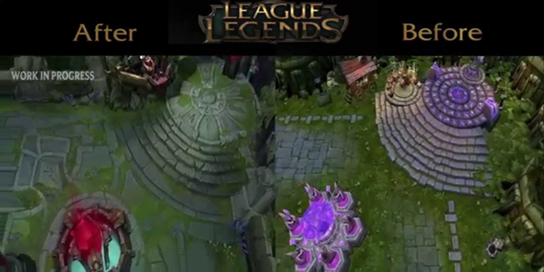

League of Legends
Við ætlum að ræða um tölvuleikinn League of Legends sem er MOBA (multiplayer online battle arena). League of Legends var gefinn út 27 október árið 2009. Höfundar leiksins heita Brandon Beck og Marc Merill og bjuggu til fyrirtækið Riot Games.
Markmið Leiksins
Leikurinn fjallar um það að spila með fjórum öðrum á móti óvina liði til þess að eyðileggja óvina „nexusinn“. Spilarinn tekur að sér verk sem „summoner“ og stjórna karakterinum sínum „Champion“ það eru 133 championar sem eru komnir í leikinn og þeir eru enn að bútil fleiri. Championarnir byrja fremur máttlausir en verða betri eftir því lengur sem leikurinn gengur. Þeir verða betri með því að spara gull sem þau fá með að drepa allsskins hluti eins og óvina Championa, minions og skrímsli. Leikirnir ganga yfirleitt í 20-60 mín.
Þróun Leiksins
Leikurinn hefur þróast frá Warcraft moddi yfir í sinn eigin leik. Árið 2012 varð League of Legends mest spilaði leikurinn í heimi og hefur haldið því til dagsins í dag. Leikurinn hefur jafnvel 100 milljónmannsmánaðarlega að spila leikinn. Aldur spilara eru frá 10-45 ára jafnvel eldri. Það eru fleiri menn sem spila LoL en konur spila þennan leik líka.
E-Sports
Leikurinn er orðinn íþrótt út um allan heim. Allra bestu spilararnir hafa keppti í sínu liði og farið á heimsmeistaramót úti. Á seinasta heimsmeistaramóti voru 31 milljón manns að horfa á mótið á netinu. Stærstu verðlaunin fyrir mót voru $2.3 milljón sigurvegararnir fá líka bikar og medalíur.